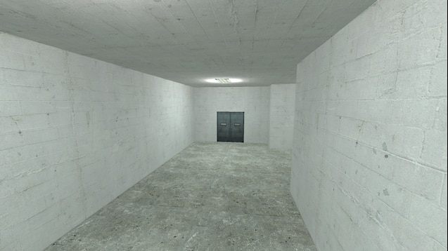
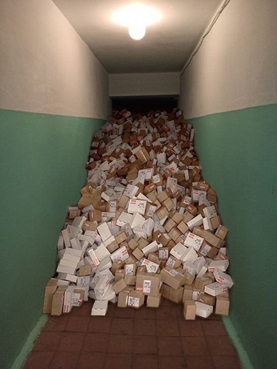
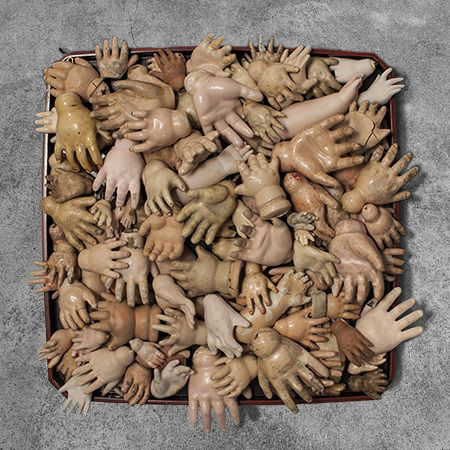
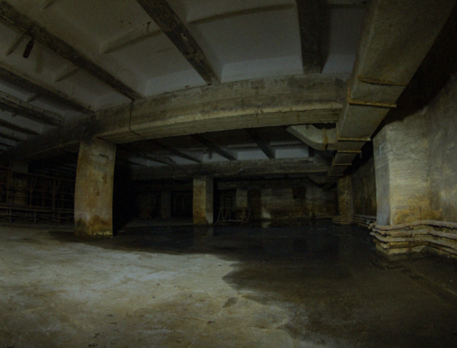
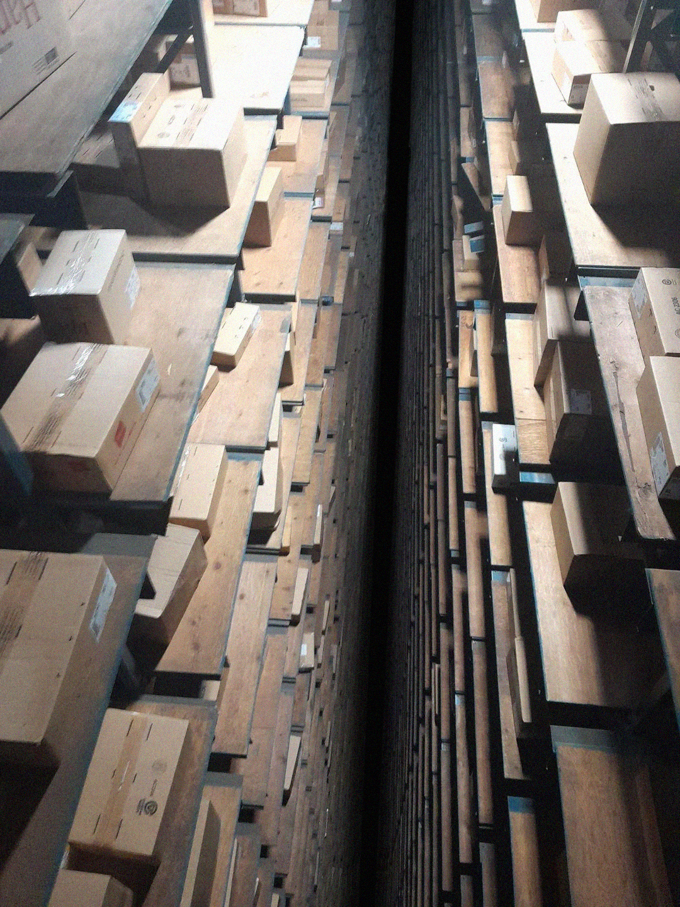

No entities are known to exist within the level, including other humans. If you see, hear, or encounter what you believe to be another wanderer, it is not a human.
Entrances And Exits:
Entrances
Get here from Level 0 by noclipping. This Level has many entrances; opening ordinary doors in many Levels has a good chance of leading to Level 1 Additionally, climbing one of the trees in Level 11.1, the end of the fifth event in
level-92, and completing The King's trial in Level 94 are all reliable ways of returning to Level 1
The fortresses of Level 283 rarely contain wooden doors that smell of mold; entering these doors will lead to Level 0
Exits
You can leave Level 1 by simply continuing to explore the Backrooms. Wandering down any extended hallway often leads to Level 2. Finding holes in the wall will lead you to
Level 19. Where the ceiling has paintings on it, noclip through and you will be at a
party!

A hallway of Level 1.
Description:
Level 1 is a large, sprawling warehouse that features concrete floors and walls, exposed rebar, and a low-hanging fog with no discernable source. The fog often coalesces into condensation, forming puddles on the floor in inconsistent areas. Unlike Level 0, this Level possesses a consistent supply of water and electricity, which allows indefinite habitation by wanderers providing that appropriate precautions are taken. It is also far more expansive, possessing staircases, elevators, isolated rooms, and hallways.
Crates of supplies appear and disappear randomly within the Level, often containing a mixture of vital items (food, Almond Water, batteries, tarps, weaponry1, clothing, medical supplies) and nonsensical objects (assorted car parts, boxes of crayons, used syringes, partially burned paper, live mice, mice in a catatonic state that have been injected with unknown substances, shoelaces, loose change, bundles of human hair). The crates should be approached with caution due to their contents, but are a valuable resource.
In addition, crude paintings and drawings with no apparent origin or meaning appear on the walls and floors. They are known to change in appearance and disappear when not in a direct line of sight or when unlit. The light fixtures within Level 1 are prone to flicker and fail at inconsistent intervals; when this occurs, supplies are liable to vanish inexplicably and hostile entities may appear unexpectedly. These entities rarely attack in groups and tend to avoid light and large gatherings of people. It is advised to carry a reliable light source and sleep holding whatever items you do not wish to lose.
Run by Tom, a former chef before noclipping into The Backrooms.
Has plenty of food in storage, resupplied by the B.N.T.G. every few months.
Tom is an amiable and optimistic person, and his diner serves as a small social hub.
01/pio1021
I've never seen anything like it. The corridor is just full of boxes! It's a shame they're filled with useless junk, it would be nice to find something useful in this pile. But I'm not going in there! The lights aren't even on yet.

The only recorded fact of this phenomenon. I wonder if it is static or can disappear like the rest of the boxes.
01/qou2013
I don't know why, but I'm not comfortable with boxes like this.

Pretty unusual content.
01/hka7912
I've been on the first one for a while now, but I've never come across a place like this. It looks older than the others, and considerably so. It definitely wasn't there before the blackout, the walls were like new. Lots of supplies, I'm going deeper into these ruins. If I find something unusual, I'll be sure to send a photo.

This may be the entrance to an unknown level.
01/joi1928
I always didn't understand why you would light up a dwelling from the outside. And that's what it's come to! Now I have nothing but my phone, I don't even have shoes! In order not to use all the batteries to light my cardboard shack, I used to leave only one small light bulb inside. And then one day it happened!
While I was asleep, the lights went out and everything around me was renewed. And there was this thing right against my wall. I woke up to it slowly taking apart my house. Clearly didn't know anyone was inside. All I could grab was a flashlight and a bag under my head. I ran through pitch darkness, then through numerous halls until I realized she had fallen behind and I was alone again. It was a miracle that something else hadn't run into the light of the lantern and the splashing of water in the puddles. Light everything up!
Don't skimp on the lighting!
01/tyr1891
The racks stretch into the void. The air is colder here than it was before. I can barely reach the boxes, there's no way I'm going in there. I'll have to go back, I hope I don't run into any more places like this.

There is no telling how deep such a chasm is.
01/tyr1891
This is the edge? It's flanked on both sides by the walls of adjacent rooms, and the chasm lasts as far as the eye can see. The air is going straight down there. I threw a rock and there was no sound. What did I expect, though? This place is creepy. The whole backstage area is creepy, but here, next to a bottomless abyss, it's especially creepy.